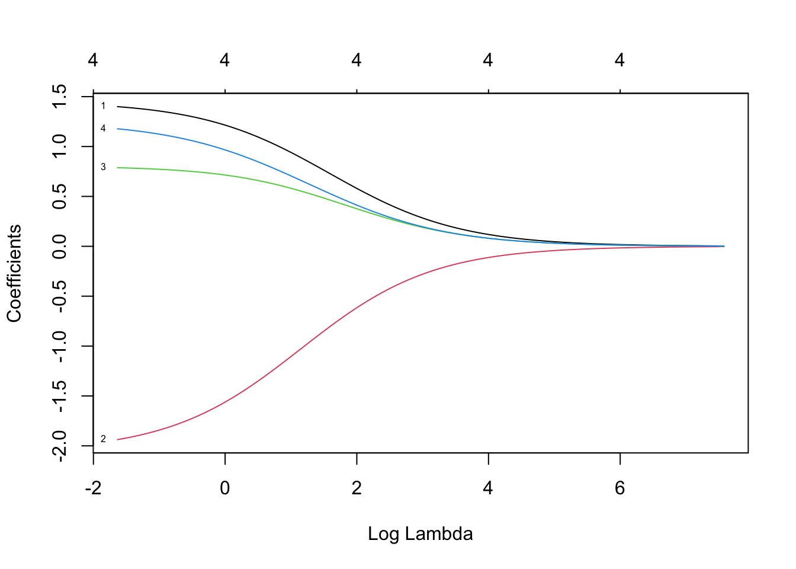
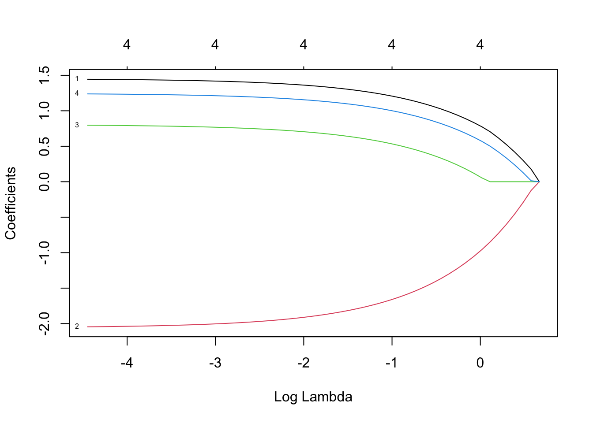

This is the unofficial math for data science cheat sheet
The basics
summary() for Linear Models in R
The summary() function is a powerful tool for summarizing linear models (lm). This cheat sheet explains the key components of the summary() output and how to interpret them.
Syntax:
```{R}summary(lm_model)```
Example:
# Fit a simple linear regression modeldata(mtcars)lm_model <-lm(mpg ~ hp, data = mtcars)# Get the summarysummary(lm_model)
Call:
lm(formula = mpg ~ hp, data = mtcars)
Residuals:
Min 1Q Median 3Q Max
-5.7121 -2.1122 -0.8854 1.5819 8.2360
Coefficients:
Estimate Std. Error t value Pr(>|t|)
(Intercept) 30.09886 1.63392 18.421 < 2e-16 ***
hp -0.06823 0.01012 -6.742 1.79e-07 ***
---
Signif. codes: 0 '***' 0.001 '**' 0.01 '*' 0.05 '.' 0.1 ' ' 1
Residual standard error: 3.863 on 30 degrees of freedom
Multiple R-squared: 0.6024, Adjusted R-squared: 0.5892
F-statistic: 45.46 on 1 and 30 DF, p-value: 1.788e-07
Key Sections in summary() Output
(a) Call
The first line repeats the formula used in the model:
Call: lm(formula = mpg ~ hp, data = mtcars)
• Interpretation: Indicates that mpg (miles per gallon) is the response variable and hp (horsepower) is the predictor.
(b) Residuals
A summary of the residuals (errors between observed and predicted values):
Residuals: Min 1Q Median 3Q Max -5.7121 -2.1122 -0.8854 1.5819 8.2360
• Min, 1Q, Median, 3Q, Max:
• These represent the spread of residuals.
• Ideally, the median should be close to 0, and residuals should be symmetrically distributed around 0.
• Large residuals (outliers) can indicate poor model fit.
(c) Coefficients
The most important section of the output:
Coefficients: Estimate Std. Error t value Pr(>|t|) (Intercept) 30.09886 1.63392 18.421 < 2e-16 hp -0.06823 0.01012 -6.742 1.79e-07
Columns: 1. Estimate: • The fitted coefficients for the intercept and predictors: • Intercept: 30.09886 (predicted mpg when hp = 0). • Slope for hp: -0.06823 (for every 1-unit increase in hp, mpg decreases by ~0.06823). 2. Std. Error: • The standard error of the coefficient estimates, which measures their variability. • Smaller standard errors indicate more precise estimates. 3. t value: • ( t )-statistic for testing if the coefficient is significantly different from 0: [ t = ] 4. Pr(>|t|): • The p-value for the null hypothesis (( H_0: = 0 )). • Smaller values (< 0.05) indicate that the predictor is statistically significant. 5. Significance Codes: • Indicate the strength of the p-value:
‘’ < 0.001, ‘’ < 0.01, ‘’ < 0.05
• In this example, both the intercept and hp are highly significant.
(d) Residual Standard Error
Residual standard error: 3.863 on 30 degrees of freedom
• Measures the typical size of residuals (in units of the response variable).
• Smaller values indicate a better fit.
1. ( R^2 ):
• Proportion of variance in the response variable (mpg) explained by the predictor (hp).
• Here, ( R^2 = 0.6024 ), meaning ~60.24% of the variance in mpg is explained by hp.
2. Adjusted ( R^2 ):
• Adjusted for the number of predictors in the model.
• Penalizes adding unnecessary predictors.
(f) F-Statistic
F-statistic: 45.46 on 1 and 30 DF, p-value: 1.788e-07
• Tests the null hypothesis that all coefficients (except the intercept) are 0.
• Large ( F )-values and small p-values indicate a good overall fit.
• Degrees of Freedom: Indicates the number of predictors (1) and residual degrees of freedom (30).
How to Interpret Results
1. Significance of Predictors:
• Look at the p-values (Pr(>|t|)) for each coefficient.
• If ( p < 0.05 ), the predictor is statistically significant.
2. Model Fit:
• Check ( R^2 ) and Adjusted ( R^2 ):
• Higher values indicate better fit.
3. Residuals:
• Ensure residuals are symmetrically distributed around 0 and have small variability.
4. Practical Significance:
• Even if a predictor is statistically significant, check its effect size (Estimate).
Example Code
# Load datasetdata(mtcars)# Fit linear modellm_model <-lm(mpg ~ hp, data = mtcars)# Get summarysummary(lm_model)
Call:
lm(formula = mpg ~ hp, data = mtcars)
Residuals:
Min 1Q Median 3Q Max
-5.7121 -2.1122 -0.8854 1.5819 8.2360
Coefficients:
Estimate Std. Error t value Pr(>|t|)
(Intercept) 30.09886 1.63392 18.421 < 2e-16 ***
hp -0.06823 0.01012 -6.742 1.79e-07 ***
---
Signif. codes: 0 '***' 0.001 '**' 0.01 '*' 0.05 '.' 0.1 ' ' 1
Residual standard error: 3.863 on 30 degrees of freedom
Multiple R-squared: 0.6024, Adjusted R-squared: 0.5892
F-statistic: 45.46 on 1 and 30 DF, p-value: 1.788e-07
Here’s a cheat sheet for plotting variables in R, covering density plots, histograms, and bivariate relationships:
Plotting Variables in R
1. Plotting a Density Curve
Density plots visualize the distribution of a continuous variable.
Syntax
plot(density(variable), main ="Density Plot", xlab ="Variable", ylab ="Density")
Example
# Example dataset.seed(1)data <-rnorm(100)# Density plotplot(density(data),main ="Density Plot of Data",xlab ="Value",ylab ="Density",col ="blue",lwd =2)
Plotting a Histogram
Histograms represent the frequency distribution of a continuous variable.
Syntax
```{r}hist(variable, breaks = n, main = "Histogram", xlab = "Variable", col = "color")```
Example
# Histogramhist(data,breaks =10, # Number of binsmain ="Histogram of Data",xlab ="Value",col ="lightblue",border ="black")
Scatterplot with a Fitted Line or Curve
Scatterplots show the relationship between two variables. Adding a line or curve highlights the trend.
syntax
```{r}plot(x, y, main = "Scatterplot", xlab = "X", ylab = "Y", pch = 19)```
Combined Example
Below is an example showing how to create all three plots for a dataset.
# Generate example dataset.seed(123)x <-rnorm(100)y <-2+1.5* x +rnorm(100, sd =1)# (1) Density Plotplot(density(x),main ="Density Plot of X",xlab ="X",col ="blue",lwd =2)
# (2) Histogramhist(x,breaks =10,main ="Histogram of X",xlab ="X",col ="lightblue",border ="black")
# (3) Scatterplot with Fitted Lineplot(x, y,main ="Scatterplot with Fitted Line",xlab ="X",ylab ="Y",pch =19,col ="blue")abline(lm(y ~ x), col ="red", lwd =2)
Simulating Data and Creating a Simulation Distribution
In this document, we simulate data from a linear model, use a loop to calculate a quantity of interest (e.g., the mean of the response variable), and create a simulation distribution from repeated iterations.
Generating Simulated Data
We generate data using the following linear model: \[
y = \beta_0 + \beta_1 x + \epsilon
\]
where:
\(x \sim N(0, 1)\)
\(\epsilon \sim N(0, \sigma^2)\)
Code
set.seed(123) # For reproducibility# Parametersn <-100# Number of observationsbeta_0 <-2# Interceptbeta_1 <-1.5# Slopesigma <-1# Standard deviation of noise# Generate datax <-rnorm(n, mean =0, sd =1) # Predictor variableepsilon <-rnorm(n, mean =0, sd = sigma) # Random noisey <- beta_0 + beta_1 * x + epsilon # Response variable# Create a data framedata <-data.frame(x = x, y = y)# Plot the simulated dataplot(data$x, data$y,main ="Simulated Data",xlab ="X",ylab ="Y",pch =19,col ="blue")abline(a = beta_0, b = beta_1, col ="red", lwd =2) # True line
Simulation: Mean of the Response Variable
Now, we will simulate 1000 datasets based on the same model and compute the mean of ( y ) for each dataset. This will generate a distribution of the mean of ( y ).
set.seed(123)# Simulation parametersnum_simulations <-1000n <-100beta_0 <-2beta_1 <-1.5sigma <-1# Storage for meansy_means <-numeric(num_simulations)# Simulation loopfor (i in1:num_simulations) {# Generate x and epsilon x <-rnorm(n, mean =0, sd =1) epsilon <-rnorm(n, mean =0, sd = sigma)# Generate y y <- beta_0 + beta_1 * x + epsilon# Compute and store the mean of y y_means[i] <-mean(y)}# Plot the simulation distributionhist(y_means,breaks =30,main ="Simulation Distribution of Mean of Y",xlab ="Mean of Y",col ="lightblue",border ="black")
Analyzing the Simulation Distribution
We calculate key statistics of the simulation distribution (mean and standard deviation) and compare them to theoretical expectations.
# Summary statisticssimulated_mean <-mean(y_means)simulated_sd <-sd(y_means)# Print resultscat("Simulated Mean of Y:", simulated_mean, "\n")
Simulated Mean of Y: 2.007734
cat("Simulated SD of Y:", simulated_sd, "\n")
Simulated SD of Y: 0.1703954
# Compare to theoretical mean and standard deviationtheoretical_mean <- beta_0theoretical_sd <- sigma /sqrt(n)cat("Theoretical Mean of Y:", theoretical_mean, "\n")
Theoretical Mean of Y: 2
cat("Theoretical SD of Y:", theoretical_sd, "\n")
Theoretical SD of Y: 0.1
Combined Code for Simulation
# Set parametersset.seed(123)num_simulations <-1000n <-100beta_0 <-2beta_1 <-1.5sigma <-1# Storage for meansy_means <-numeric(num_simulations)# Simulation loopfor (i in1:num_simulations) { x <-rnorm(n, mean =0, sd =1) epsilon <-rnorm(n, mean =0, sd = sigma) y <- beta_0 + beta_1 * x + epsilon y_means[i] <-mean(y)}# Plot simulation distributionhist(y_means,breaks =30,main ="Simulation Distribution of Mean of Y",xlab ="Mean of Y",col ="lightblue",border ="black")
# Calculate and print statisticscat("Simulated Mean of Y:", mean(y_means), "\n")
Simulated Mean of Y: 2.007734
cat("Simulated SD of Y:", sd(y_means), "\n")
Simulated SD of Y: 0.1703954
cat("Theoretical Mean of Y:", beta_0, "\n")
Theoretical Mean of Y: 2
cat("Theoretical SD of Y:", sigma /sqrt(n), "\n")
Theoretical SD of Y: 0.1
Key Takeaways
Simulation Loop: Use a for loop to repeat the simulation and calculate quantities of interest (e.g., the mean of ( y )).
Simulation Distribution: The distribution of the simulated means approximates the theoretical mean and variance.
Practical Applications: This technique is useful for hypothesis testing, bootstrapping, and exploring variability in statistical models.
Linear Regression Models and Regularization
This document demonstrates how to fit linear regression models (including interaction and polynomial terms) and perform Lasso and Ridge regularization.
Generating Simulated Data
We simulate a dataset based on the following model: \[
y = 2 + 1.5x_1 - 2x_2 + 0.8x_1x_2 + 1.2x_1^2 + \epsilon
\] where:
\(x_1\) and \(x_2\) are predictors drawn from \(N(0, 1)\)
\(\epsilon \sim N(0, 1)\) is random noise.
Code:
set.seed(123)# Generate datan <-200x1 <-rnorm(n, mean =0, sd =1)x2 <-rnorm(n, mean =0, sd =1)epsilon <-rnorm(n, mean =0, sd =1)y <-2+1.5* x1 -2* x2 +0.8* x1 * x2 +1.2* x1^2+ epsilon# Create a data framedata <-data.frame(y, x1, x2)
Fitting a Linear Regression Model
We include interaction \(x_1x_2\) and polynomial \(x_1^2\) terms in the regression.
# Fit linear model with interactions and polynomialslm_model <-lm(y ~ x1 + x2 +I(x1 * x2) +I(x1^2), data = data)# Print summary of the modelsummary(lm_model)
Call:
lm(formula = y ~ x1 + x2 + I(x1 * x2) + I(x1^2), data = data)
Residuals:
Min 1Q Median 3Q Max
-2.83199 -0.57590 0.07052 0.63371 2.37411
Coefficients:
Estimate Std. Error t value Pr(>|t|)
(Intercept) 1.99355 0.08435 23.64 <2e-16 ***
x1 1.45204 0.07625 19.04 <2e-16 ***
x2 -2.05802 0.06973 -29.51 <2e-16 ***
I(x1 * x2) 0.80496 0.07392 10.89 <2e-16 ***
I(x1^2) 1.24563 0.05519 22.57 <2e-16 ***
---
Signif. codes: 0 '***' 0.001 '**' 0.01 '*' 0.05 '.' 0.1 ' ' 1
Residual standard error: 0.9711 on 195 degrees of freedom
Multiple R-squared: 0.9198, Adjusted R-squared: 0.9182
F-statistic: 559.2 on 4 and 195 DF, p-value: < 2.2e-16
Interpretation: - Look at the coefficients to assess the relationship between predictors and the response. - The \(R^2\) value shows how much variance is explained by the model.
Adding Regularization: Ridge and Lasso
For regularized regression, we use the glmnet package.
Ridge Regression
Ridge regression minimizes the sum of squared residuals with an added penalty proportional to the sum of squared coefficients \(\lambda \sum \beta_j^2\).
library(glmnet)
Loading required package: Matrix
Loaded glmnet 4.1-8
# Prepare data for glmnetx <-model.matrix(y ~ x1 + x2 +I(x1 * x2) +I(x1^2), data)[, -1] # Remove intercepty <- data$y# Fit Ridge Regressionridge_model <-glmnet(x, y, alpha =0) # alpha = 0 for Ridgeplot(ridge_model, xvar ="lambda", label =TRUE) # Plot coefficient paths

Interpretation:
The plot shows how coefficients shrink as \(\lambda\) increases.
Ridge is useful when multicollinearity is present or to stabilize coefficients.
Lasso Regression
Lasso regression minimizes the sum of squared residuals with a penalty proportional to the sum of absolute coefficients \(\lambda \sum |\beta_j|\)
# Fit Lasso Regressionlasso_model <-glmnet(x, y, alpha =1) # alpha = 1 for Lassoplot(lasso_model, xvar ="lambda", label =TRUE) # Plot coefficient paths

Interpretation:
Lasso can shrink some coefficients to exactly zero, effectively performing variable selection.
Choosing Optimal \(\lambda\) Using Cross-Validation
# Ridge Cross-Validationridge_cv <-cv.glmnet(x, y, alpha =0) # Ridgebest_lambda_ridge <- ridge_cv$lambda.mincat("Best Lambda for Ridge:", best_lambda_ridge, "\n")
Best Lambda for Ridge: 0.1950984
# Lasso Cross-Validationlasso_cv <-cv.glmnet(x, y, alpha =1) # Lassobest_lambda_lasso <- lasso_cv$lambda.mincat("Best Lambda for Lasso:", best_lambda_lasso, "\n")
Best Lambda for Lasso: 0.01169584
Interpretation:
cv.glmnet finds the optimal \(\lambda\) using cross-validation.
Use the best \(\lambda\) to refit the Ridge or Lasso model for predictions.
Comparison of Models
# Refit models with optimal lambdaridge_final <-glmnet(x, y, alpha =0, lambda = best_lambda_ridge)lasso_final <-glmnet(x, y, alpha =1, lambda = best_lambda_lasso)# Coefficients for Ridge and Lassocoef_ridge <-coef(ridge_final)coef_lasso <-coef(lasso_final)cat("Ridge Coefficients:\n")
Ridge Coefficients:
print(coef_ridge)
5 x 1 sparse Matrix of class "dgCMatrix"
s0
(Intercept) 2.0477138
x1 1.3998610
x2 -1.9375341
I(x1 * x2) 0.7876673
I(x1^2) 1.1776864
cat("Lasso Coefficients:\n")
Lasso Coefficients:
print(coef_lasso)
5 x 1 sparse Matrix of class "dgCMatrix"
s0
(Intercept) 1.9996038
x1 1.4442504
x2 -2.0453655
I(x1 * x2) 0.7963225
I(x1^2) 1.2378548
Interpretation:
Compare the coefficients from Ridge and Lasso with those from the unregularized linear model.
Ridge retains all variables, but shrinks coefficients. Lasso may set some coefficients to zero.
Summary
Model
Key Feature
Use Case
Linear Model
Includes interactions and polynomials.
Explains relationships between variables.
Ridge
Shrinks coefficients toward zero; no variable elimination.
Addresses multicollinearity or overfitting.
Lasso
Shrinks coefficients, can eliminate variables.
Performs variable selection and regularization.
Matrix Operations in R Cheat Sheet
This cheat sheet covers essential matrix operations in R, including creating matrices, checking dimensions, and performing common operations like addition, multiplication, transpose, and inverse.